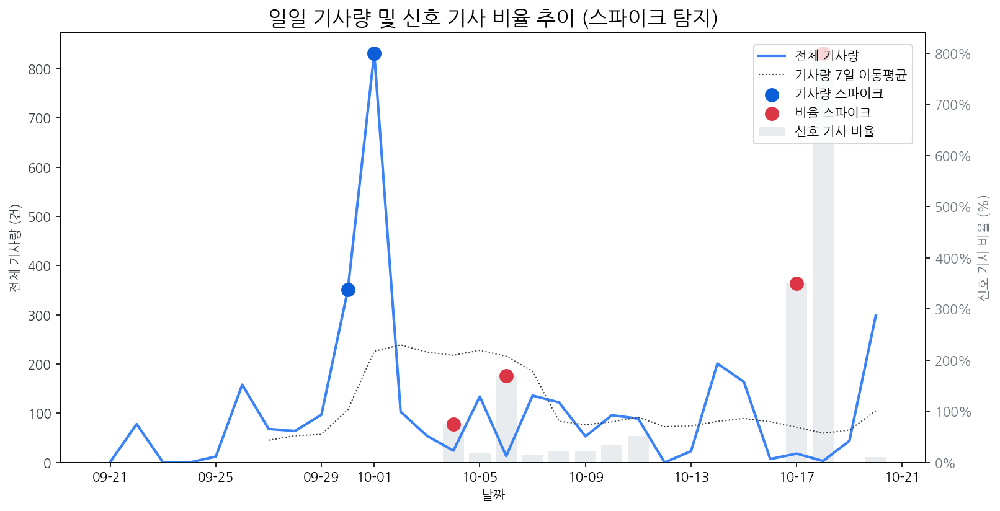

| 날짜 | 기사량 | Z-Score |
|---|---|---|
| 2025-09-30 | 351건 | 2.04 |
| 2025-10-01 | 832건 | 2.1 |
| 날짜 | 비율 | Z-Score |
|---|---|---|
| 2025-10-04 | 75.00% | 2.27 |
| 2025-10-06 | 169.23% | 2.05 |
| 2025-10-17 | 350.00% | 2.24 |
| 2025-10-18 | 800.00% | 2.06 |
| 급등 신호 | 오늘 언급량 | 어제 대비 증가 | 모멘텀(z_like) |
|---|---|---|---|
| 삼성 | 31 | 25 | 5.3 |
| lg | 22 | 22 | 5.16 |
| lg전자 | 20 | 19 | 4.55 |
| 애플 | 10 | 9 | 2.75 |
| 삼성전자 | 21 | 10 | 2.55 |
| oled | 9 | 4 | 1.95 |
| 현대차 | 4 | 4 | 1.78 |
| 모멘텀 토픽 | z_like 점수 | 누적 언급량 |
|---|---|---|
| 삼성 | 5.3 | 378 |
| lg | 5.16 | 275 |
| lg전자 | 4.55 | 63 |
| 애플 | 2.75 | 91 |
| 삼성전자 | 2.55 | 155 |
| 날짜 | 유형 | 제목 |
|---|---|---|
| 2025-10-21 | INVEST,ORDER | OLED 대형 패널 시장 확대…선익시스템 성장 기대감↑ |
| 2025-10-21 | INVEST | “K-디스플레이, 지금 투자 안하면 OLED 마저 中에 내줄 것” |
| 2025-10-21 | LAUNCH | 삼성, 22일 '무한 XR' 공개…애플·메타와 'XR 삼국지' 서막 |
| 2025-10-21 | INVEST | 中, ‘한국의 LCD 악몽’ 재현 노린다… IT용 OLED 투자서 ‘4대 1′ 공세 |
| 2025-10-21 | INVEST,LAUNCH | SDC, 신형 맥북에 8.6세대 OLED 패널 독점 공급 |